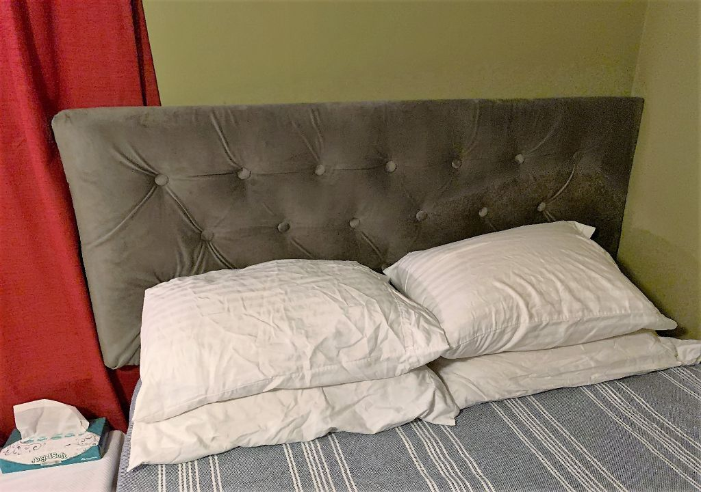

Home Improvement Projects
No matter how many things I fix or make or re-do in my house there's always something else to do. Some of the projects are boring but useful (new hot water heater, I'm looking at you). But some I enjoy more, both for the process of making and the process of using.
Lamp Update
This ugly little brass guy was $3.99 at the thrift store. It got:
- Base plate removed and glued back on (no more tape!)
- Rust sanded off
- Coat of primer
- 2 coats of spray paint
- Shiny polycrylic finish
- New shade (which is way too small, still looking for something bigger but affordable)


Pantry Shelves
I've wanted to do this project for so many years! This pantry is deep but only had one full-depth shelf and one sliding drawer at the bottom before. I made a whole new set of sliding shelves so you can actually see what's in it and use all the space efficiently.


Basement Tool Storage
I wish I had a better 'before' picture of this because it was quite the disorganized mess. Since quarantine I finally got around to buying and hanging some pegboard for my tools in the basement.

Office Pegboard
I liked the basement pegboard so much that I used some extra to hang by my desk in my offce. It's about 18x18 and fills a previously blank wall. It was too utilitarian so I added a little vinyl decal as decoration.
Upholstered Headboard
I made this from scratch for my fiancé's guest bedroom. It's plywood with holes drilled in it, covered with egg crate foam and fabric. The buttons are made with washer and bolts, covered with fabric and padding. They are put through the holes in the plywood and attached with nuts on the back. There are pine legs that attach to the back of the headboard and the bed frame. This is the sixth headboard I've made with different methods and it's the best method, in terms of looks and sturdiness.
Shirts and Other Wearables
This year I bought a Cricut cutting machine, which can cut out images based on .svg files. Not going to lie, I don't design my own cut files (yet). I get them from free sites online or purchase from professional designers. The Cricut software lets you import your image files, customize, resize, etc. Then it cuts them from whatever material you choose. I primarly use HTV (heat transfer vinyl) for shirts and regular adhesive vinyl for decals, but it can also cut fabric, cardstock and many other materials as well. After it's cut I iron the patterns onto various fabric items.
Baby Onesies
There are SO MANY cute baby ideas:


Shirts
There are tons of other fun things to make besides baby wear though!


Stained Glass Projects
Recently I haven't done as much stained glass because it requires long stretches of time to sit down and focus. I do love it and these were fun pieces to make.
Trogdor the Burninator
Christmas gift for my brother based on an internet video


Letter H Glass
This was a Father's Day gift for my dad, the H is for their surname. Much of this glass was textured and I had a hard time getting the textures to flow correctly.


Crochet Projects
My mom taught me to crochet when I was little and I came back to in in college after many years. Now it's one of my favorite things when I want to do something with my hands and also watch tv.
Shell Bookmarks

Harry Potter Amigurumi
Winter Hat

Matching Cleveland Cavaliers Hats
Gifts for my fiancé's father and nephew, they are big Cavs fans.
Fall Pumpkin
Freehanded from an image I saw on Pinterest, I've made several more since this one.

Stuffed Whale

Gifts
These are things I made that are outside my usual crafting areas, but super fun anyway. I love when I get the chance to learn something new and then someone actually appreciates it.
Mother's Day Card
Nikola Tesla Wood-Burned Cork Trivet
Baby Silhouette Frames